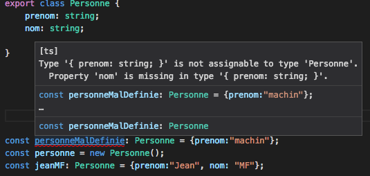

Introduction à TypeScript
Jean Martineau-Figuette
Simplon, Labège
12 janvier 2017
Sommaire
- à propos de moi
- Qui suis-je ? Que fais-je ?
- Mon rapport au métier de développeur
- TypeScript
Qui suis-je ? Que fais-je ?
Développeur Java depuis 2004, mais aussi
- chef de projet
- enseignant
- développeur web et mobile pour des projets persos
Pour qui ?
- mes employeurs: SSII vs éditeur
- projets personnels
- meLe (AngularJS + express)
- Score: appli mobile hybride (Ionic, Angular)
mon rapport au métier de développeur
- mon métier par choix
- de l'importance de se tenir à jour
- dépasser le syndrome de l'imposteur
TypeScript: qu'est-ce ?
- surensemble de javascript
- fortement typé
- le langage de prédilection pour faire de l'Angular
Comment ça marche ?
vérification de type à la compilation. Exemple:
function sayHello(person: string) {
return "Hello, " + person;
}
var user = [0, 1, 2];
document.body.innerHTML = sayHello(user);
sayHello.ts(7,26): Supplied parameters do not match any signature of call target
Qu'apporte TypeScript ?
les types primitifs
let isDone: boolean = false;
let decimal: number = 6;
let hex: number = 0xf00d;
let binary: number = 0b1010;
let name: string = "Niobé";
const list: Array<number> = [1, 2, 42];
Note: Banissez varPréférez
const, ou let quand c'est nécessaire.
les enums
une liste finie de valeurs possibles:
enum EtatCommande {
EN_ATTENTE_FACTURATION,
EN_PREPARATION,
PREPAREE,
REMISE_AU_TRANSPORTEUR,
DISPONIBLE_EN_RELAIS_COLIS,
RECUPEREE_PAR_LE_CLIENT
}
let etatCommandeCourante = EN_PREPARATION;
et aussi...
// any
let list: any[] = [1, true, "free"];
// le typage de retour de fonction
function warnUser(): void { // returns nothing
alert("This is my warning message");
}
function getGreatest(number a, number b): number { // returns a number
return a > b ? a : b;
}
les classes
(en fait, proposé par ES6)

import {Question} from './question';
import {Answer} from './answer';
export class Topic {
question: Question;
answers: Answer[];
constructor() {
this.answers = [];
}
setBest(bestAnswer: Answer) {
this.answers.forEach(this.markAsBest, bestAnswer);
}
private markAsBest(anyAnswer: any) {
anyAnswer.isBest = anyAnswer === this;
}
getBestAnswer(): Answer {
const bestAnswers = this.answers.filter(answer => answer.isBest);
return bestAnswers.length > 0 ? bestAnswers[0] : null;
}
}
l'héritage
existe déjàHow to
- installer nodeJS
-
npm install -g typescript - exécuter
tsc monFichier.ts